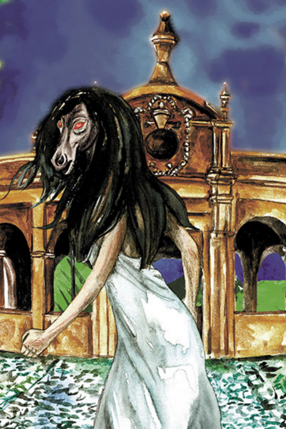

1. La Siguanaba
También llamada “Siguanaba”, es una leyenda de la mitología salvadoreña, originalmente difundida en Guatemala, donde se narra sobre Sihuehuet (Mujer hermosa) y un romance que tuvo con el hijo del dios Tlaloc, del cual resultó embarazada. Siendo una terrible madre, dejaba a su hijo a solas mientras satisfacía a su amante.
Cuando Tlaloc supo de eso, maldijo a Sihuehuet cambiando su nombre a Siguanaba (Mujer horrible). Ella sería hermosa a primera vista, pero cuando los hombres se acercaran, daría la vuelta convirtiéndose en un horrible aborrecimiento. La condenaron a vagar por el campo, apareciendo a hombres que viajaban solos por la noche, persiguiendo con insistencia a los enamorados y mujeriegos. Dicen existir avistamientos de ella por los ríos de El Salvador en la madrugada, lavando ropa y buscando a su hijo el Cipitío, al que le fue concedida la juventud eterna por el mismo dios Tlaloc como parte del castigo.
Métodos de supervivencia: Los hombres se enamoran a primera vista y la Siguanaba los llama hasta un barranco antes de mostrar su verdadero rostro. Para salvarse, deben morder una cruz o una medallita y encomendarse a Dios. Otra forma heroica consiste en hacer un esfuerzo supremo, acercarse a ella lo más posible, tirarse al suelo boca arriba, estirar las manos hasta sentir su cabello y tirar de él con fuerza; la criatura se asustará al punto de tirarse sola al barranco. En otras versiones, basta con gritarle “¡No te vas a ir, María pata de gallina!” para asegurar que huya despavorida del río.